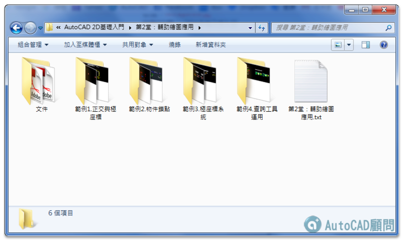
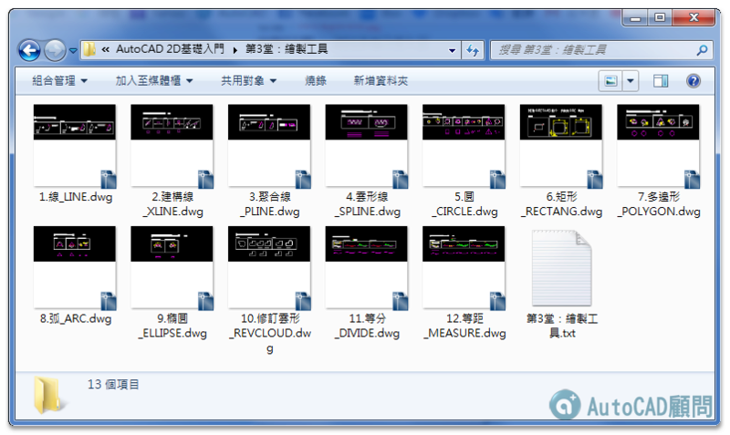
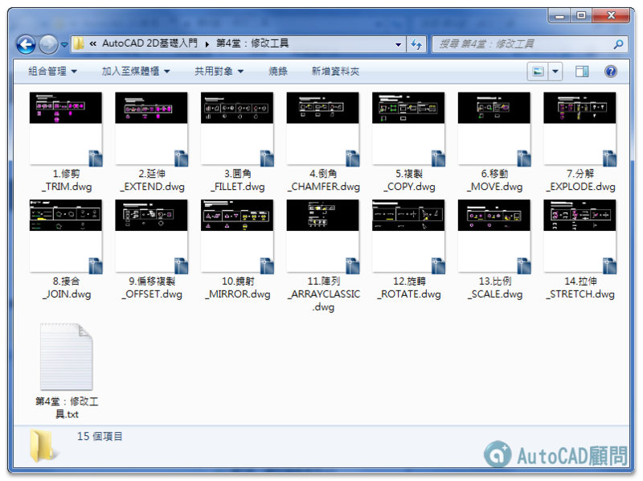
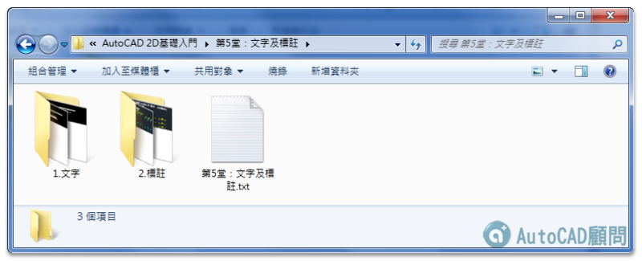
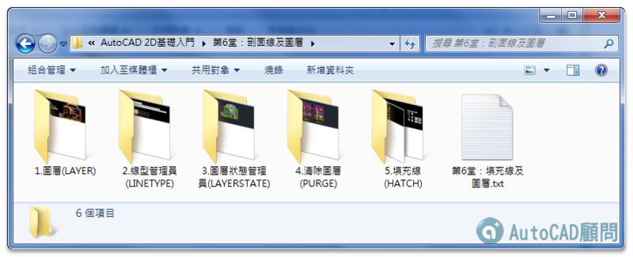
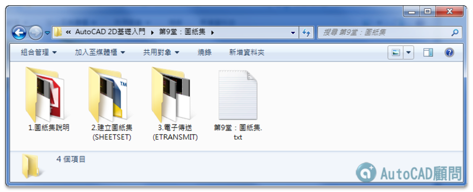
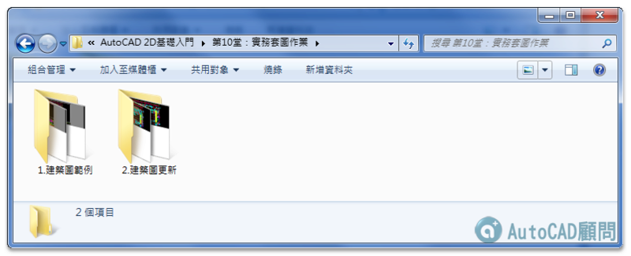
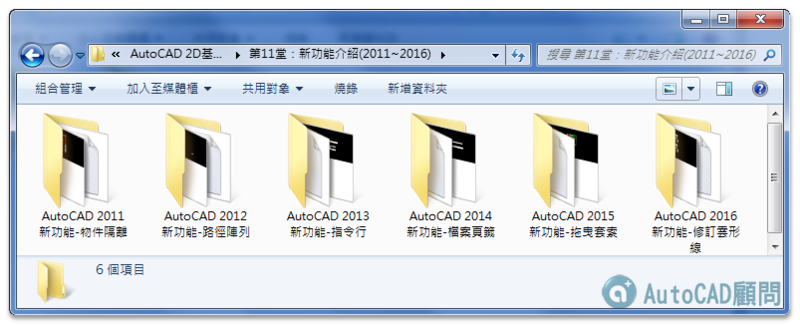

★注意：線上課程影片頻道綁定「GMAIL信箱」，透過電腦線上觀看影片時，必需要「登入GOOGLE帳戶」！
★費用：2D入門完整課程12堂課(附錄1,2) NT1500元。
★加入線上課程 👉 https://autocad-tw.1shop.tw/fwmimx 👈
版本：AutoCAD 2016
影片：中文影音教學
規格：共計12堂+附錄課程（課程765分鐘）
註1：附有DWG範例供操作練習，還有相關教學文件筆記。
註2：如遇播放問題，可改用「彈出式視窗」全螢幕觀看影片。

■AutoCAD 2D入門 第11堂：新功能介紹(2011~2016)
■AutoCAD 2D入門 第12堂：室內平面圖繪製(套圖框)

第1堂：基本認識與操作

第2堂：輔助繪圖應用

第3堂：繪製工具

第4堂：修改工具

第5堂：文字及標註

第6堂：剖面線及圖層

第7堂：圖塊及外部參考

第8堂：出圖及出版

第9堂：圖紙集

第10堂：實務套圖作業

第11堂：新功能介紹(2011~2016)

第12堂：室內平面圖繪製(套圖框)

附錄課程：

https://www.autocad-tw.com/f72-forum
https://www.autocad-tw.com/t23024-topic
https://www.autocad-tw.com/t22774-topic